Version 2.0 · 22 release captures · 27 September 2026. Original screenshots from the Release builds on paired simulators, with live dock data and a simulated London location. Click any image for its full native-resolution PNG.
These are review assets, not an App Store upload. Home Screen captures include other apps installed on the existing simulator. Physical Siri/AirPods announcements and background delivery still need device verification. Dock counts vary because availability changed during capture.
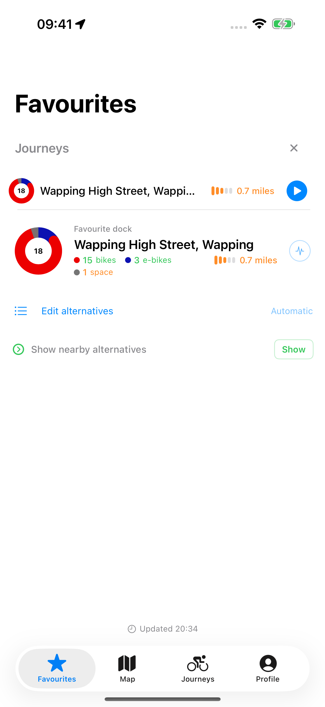
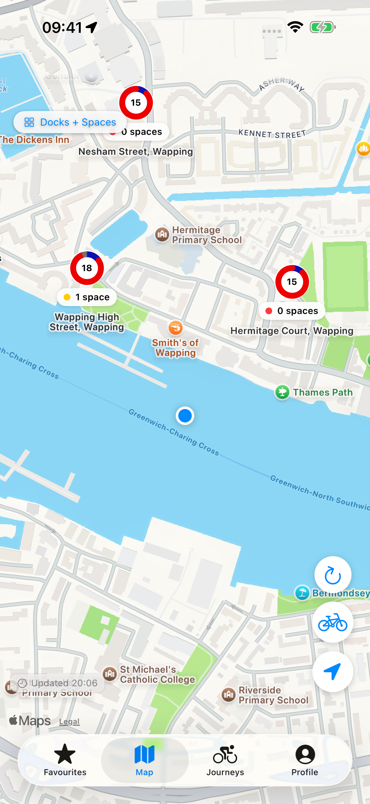
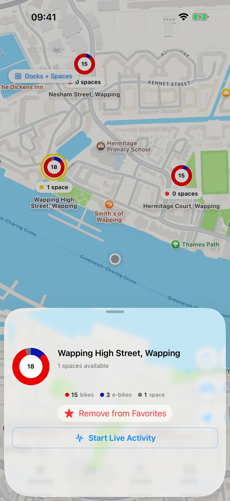
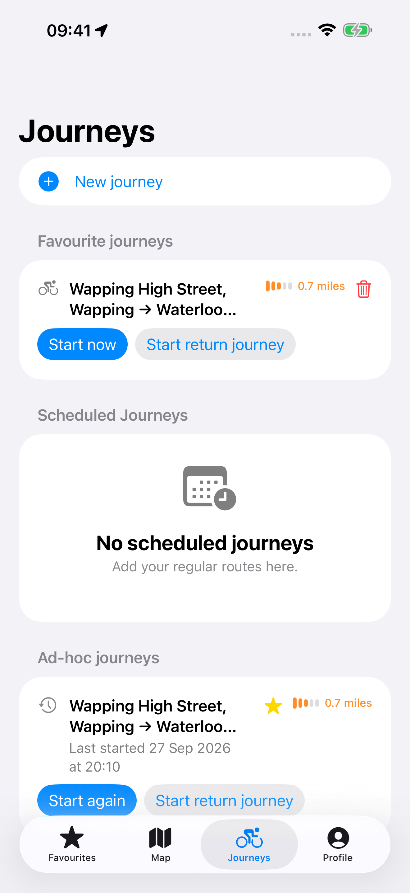
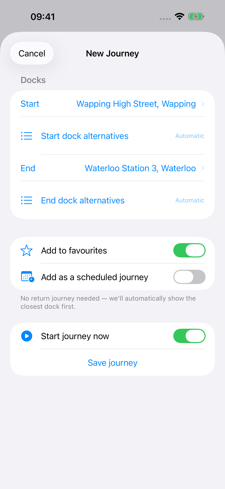
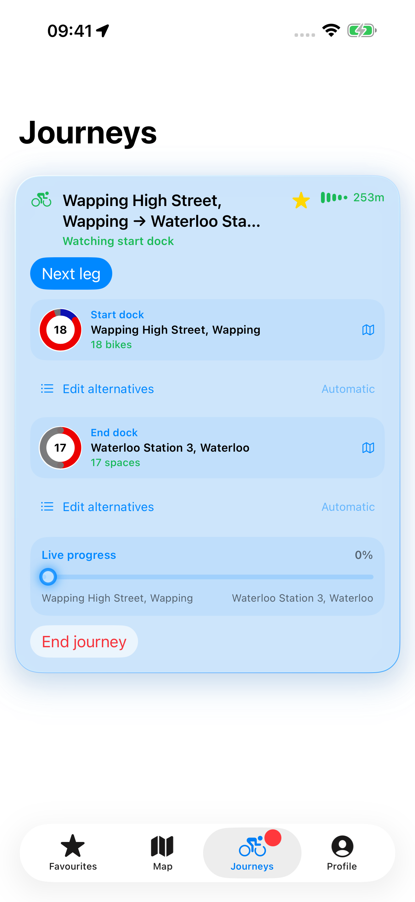
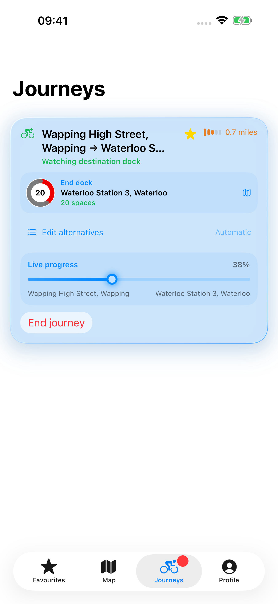
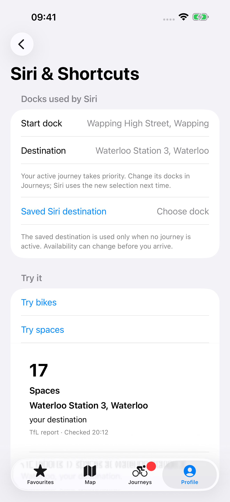
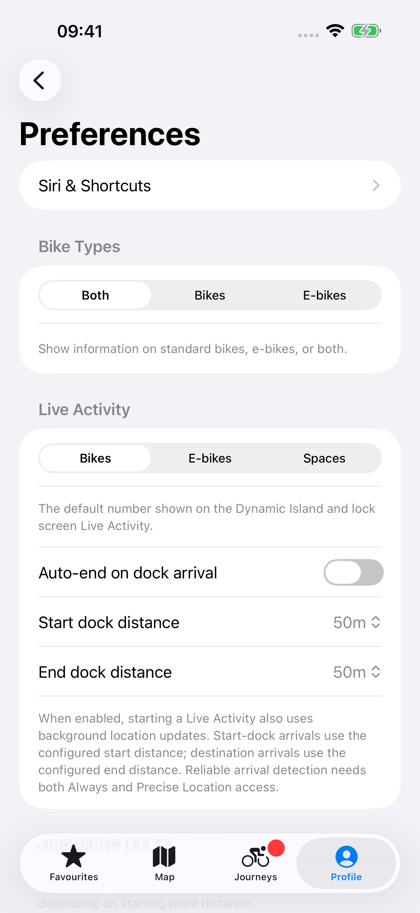
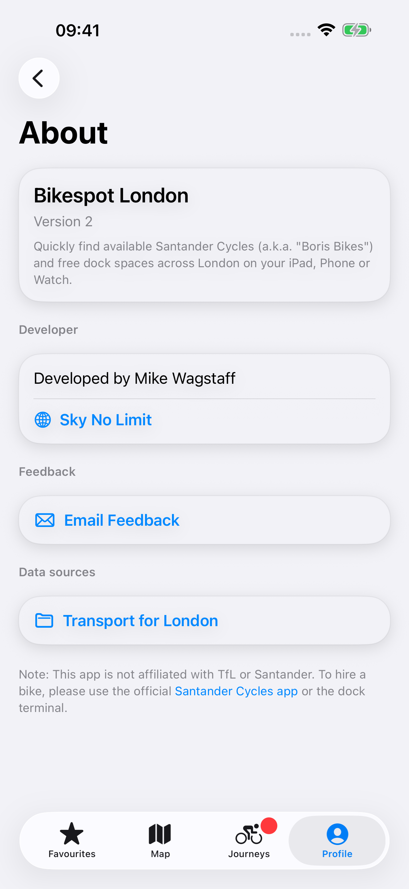
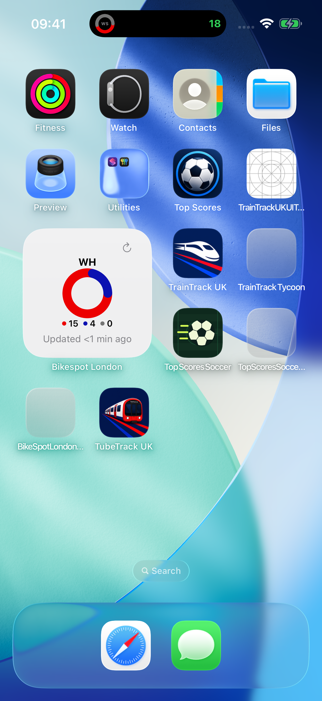
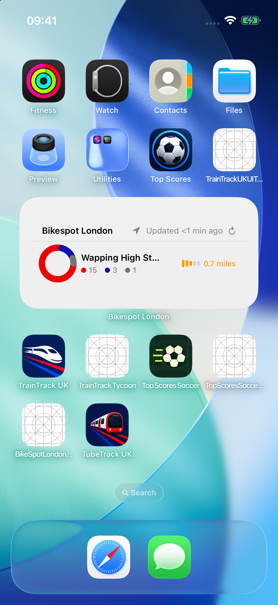
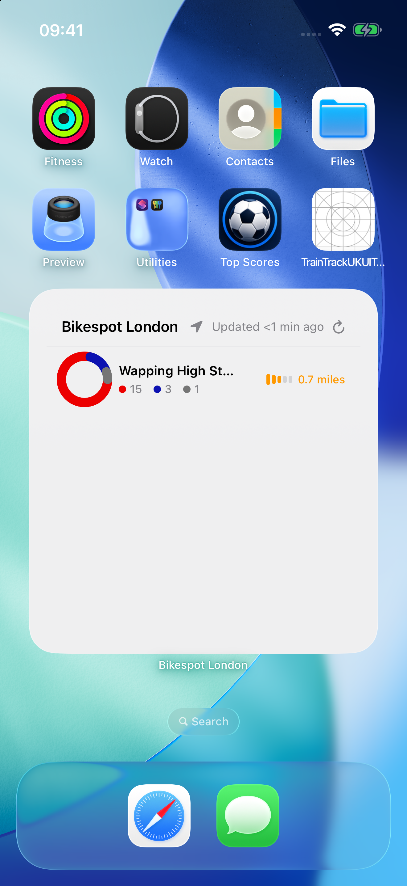
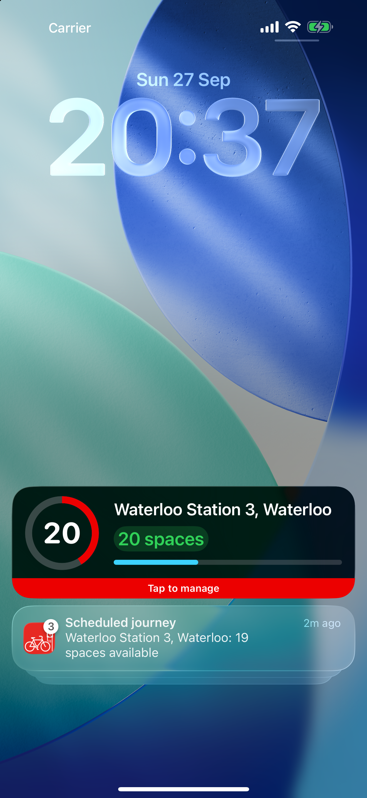
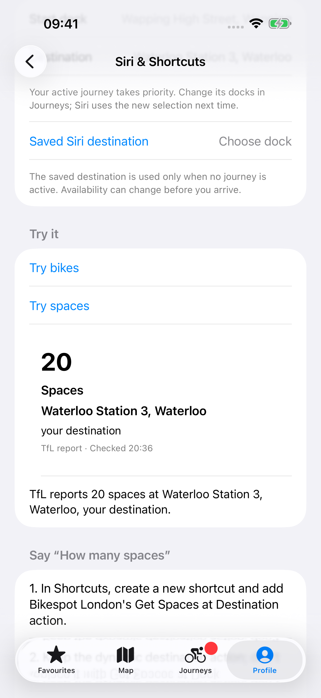
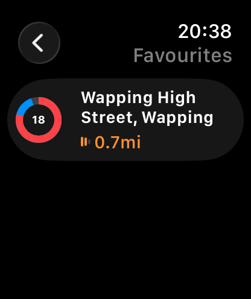
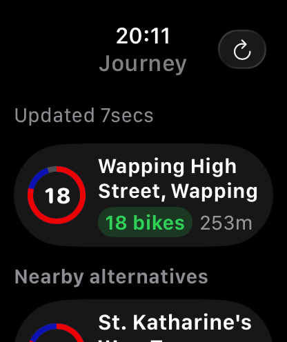
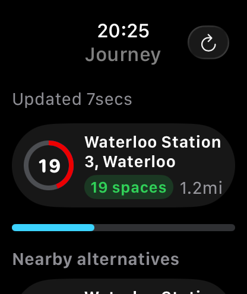
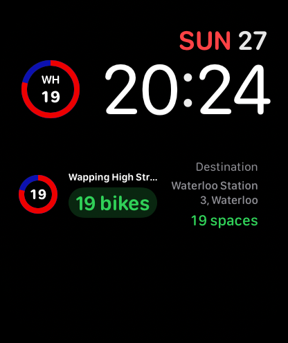
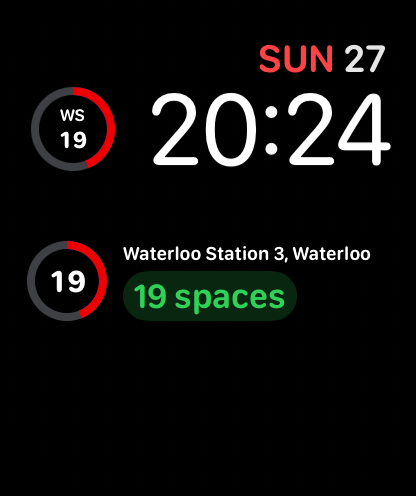
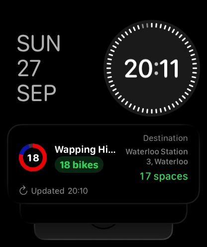
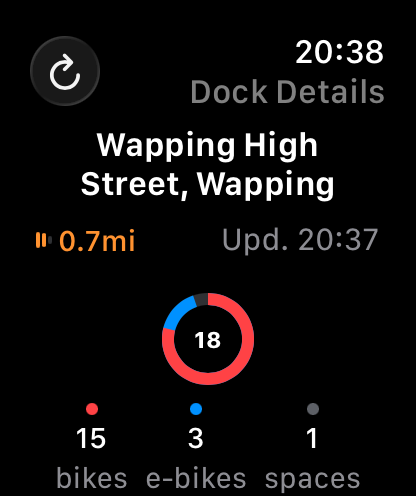